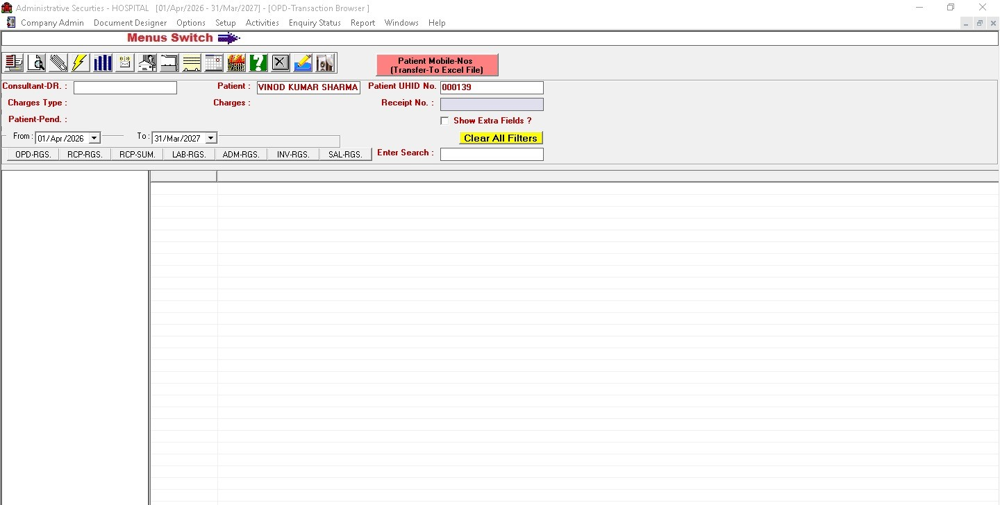
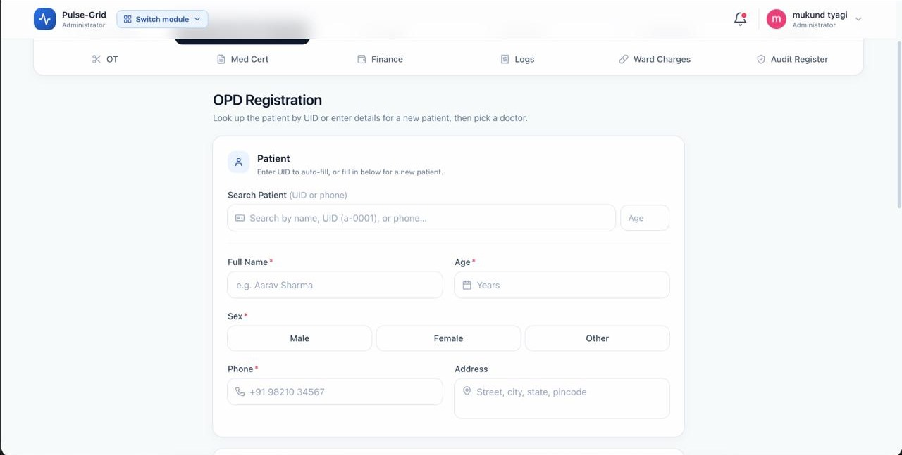
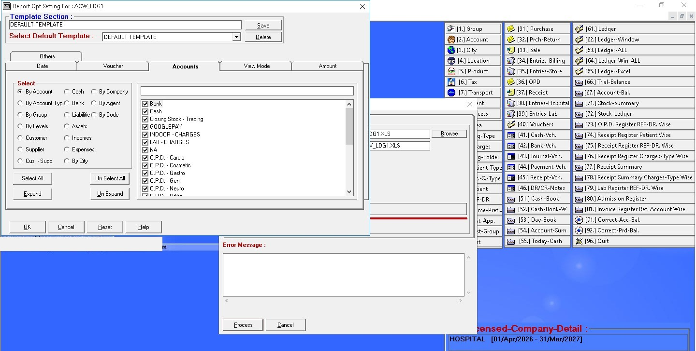
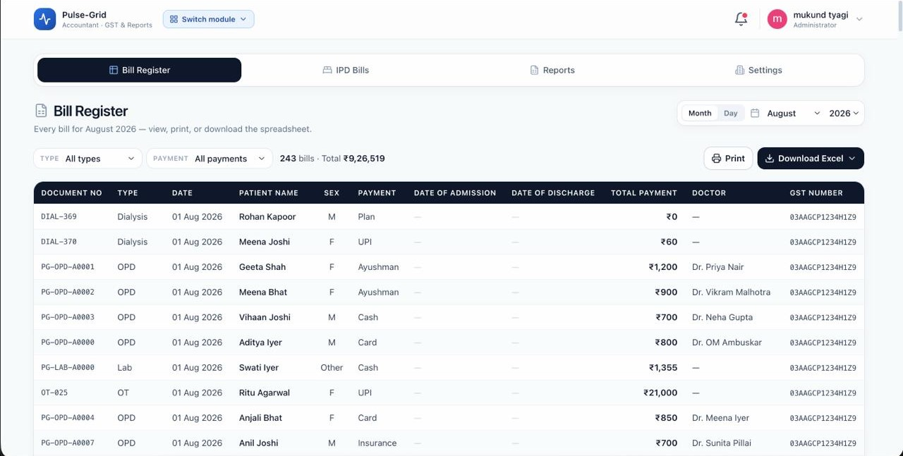
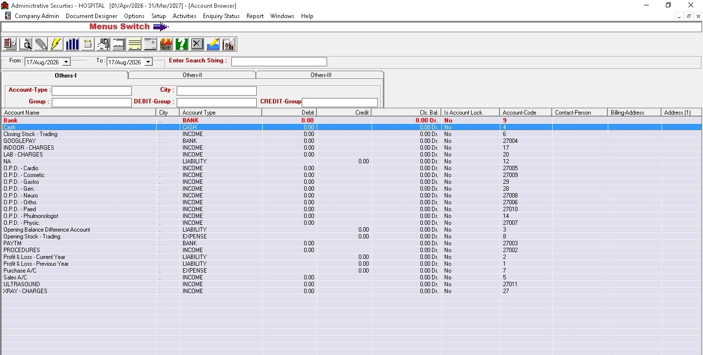
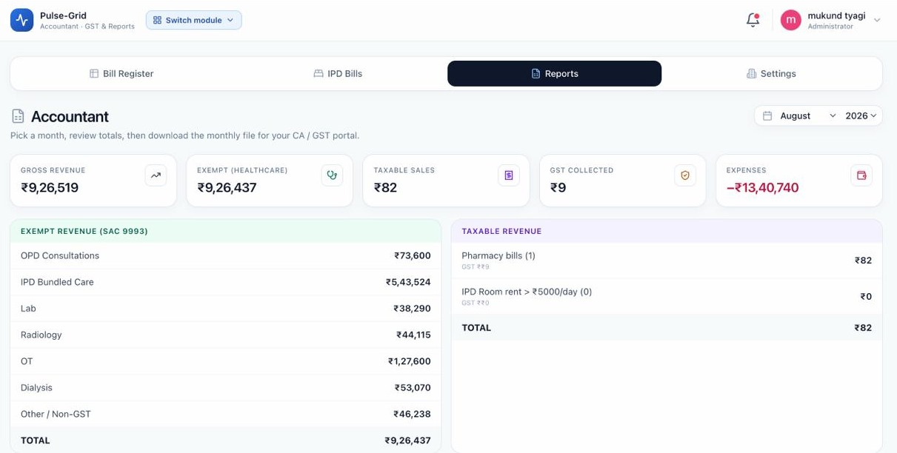

PITCH DECK
The operating system for India's mid-sized hospitals — live in 22 of them, all paying.
Why 30,000 hospitals still run on paper.
Mid-sized private hospitals are served either by paper registers or by desktop software written two decades ago. Neither produces a usable record.
Gigabytes of clinical history sit in isolated SQL tables with no export path. No proactive recall, no diagnostic context, no way to answer a question about last year.
Staff key identical patient details four times — reception, lab, ward register, billing counter. Discharge takes 45 minutes of reconciliation before the patient can leave.
Unbilled procedures, bed bottlenecks and pharmacy shrinkage surface at month-end reconciliation — weeks after the patient has gone home and the money is unrecoverable.
The screen the front desk uses a hundred times a day.


Four stacked dialogs, or one register.


Monthly accounts, as a hospital does it today.


Prototype to 22 hospitals in ninety days.
Built, sold and deployed with no external capital and no free trials.
Unified data architecture across registration, OPD, IPD, lab, pharmacy and billing. Designed and shipped in four weeks.
Shadowed doctors and desk staff through live shifts, iterating daily on workflow friction and billing speed.
Grew to 22 paying hospitals entirely through owner-to-owner referral. Every account paid in advance.
One system, eight modules.
| Module | What it replaces today | In Pulse Grid |
|---|---|---|
| 01 · Registration | Paper OPD slip book | ABHA-synced record, created once |
| 02 · Appointments | Phone diary at reception | Slot queue against live doctor availability |
| 03 · Billing | Manual bill assembly at discharge | Auto-assembled in 1.4 seconds |
| 04 · Pharmacy | Reordering from memory | Buffer replenishment on consumption |
| 05 · Diagnostics | Handwritten report slips | Direct analyser sync into the record |
| 06 · In-patient | Whiteboard bed chart | Live bed grid with occupancy alerts |
| 07 · Accounts | Year-end scramble for the CA | GST-ready register, exported monthly |
| 08 · WhatsApp | Printed handouts at the counter | Native dispatch of bills and reports |
One patient record underneath all eight. Nothing is re-keyed between modules, which is what makes the 1.4-second discharge possible at all.
AES-256 · DPDP · ABDM-readyThe loop that closes the leak.
Admission & token
Patient captured once at reception. Details propagate instantly to OPD, lab, pharmacy and the bed grid. No second form.
Auto-ledger accrual
Doctors log prescriptions and procedures. Consumables, pathology and bedside charges accrue to the patient ledger as they happen.
Zero-leak settlement
Every pharmacy slip and ward fee reconciles into one bill in 1.4 seconds. Nothing leaves unbilled, because nothing can.
Straight to WhatsApp
Itemised receipt, discharge summary and diagnostic reports dispatched to the patient's phone. No app to install.
A 60-bed hospital recovers an estimated ₹48,000 a month in previously unbilled consumables and bedside procedures.
+₹5.76L / yr recoveredIntelligence that arrives, unprompted.
Not a dashboard waiting to be opened. A daily brief in plain English, on the MD's phone at eight in the morning.
Three things a generic HMS cannot copy.
We match the floor, not the manual
Each hospital's billing and clinical workflow is configured to how its staff already work. Incumbents ship a rigid product and bill for training; we remove the reason training is needed.
The system speaks first
An active assistant that surfaces unbilled items, flags bed bottlenecks and drafts documents before a human thinks to ask. Reporting tools wait to be queried.
Zero-app patient adoption
WhatsApp sits in the core data layer, not in a plugin. Bills, reports and reminders reach the patient on the one app they already have open.
Unique patients carrying a complete record from registration through discharge.
Every one machine-assembled. None hand-written at the counter.
Opened every shift to do the job — not a report anyone has to remember to run.
What actually flows through the system.
Throughput the hospitals put through it every day — not registered accounts, not seats sold.
22 hospitals live. All 22 pay.
Sample of eight from the deployed base — 460 beds under management across private hospitals in North India. References available on request.
Where the ₹1,32,000 a month comes from.
| Line | Basis | Value |
|---|---|---|
| Blended ARPA | Flat monthly SaaS across 22 live accounts | ₹6,000 / mo |
| Infrastructure & WhatsApp API | Cloud and messaging cost per account | ₹960 / mo |
| Gross margin | (6,000 − 960) ÷ 6,000 | 84% |
| Customer acquisition cost | ₹0 paid media; founder time and travel only | < ₹8,000 |
| CAC payback | 8,000 ÷ (6,000 × 84%) | 1.6 months |
| LTV / CAC | 36-month life at 84% margin, ₹8,000 CAC | > 18× |
Nearest expansion lever: three early accounts still sit below list price. Moving them to the ₹6,000 tier adds ₹8,000/mo — ₹96,000 a year — with no new acquisition cost.
Flat monthly SaaS. No per-bed maths.
Single-site clinics
Under 20 beds. Core registration, OPD and billing. No setup fee, no annual lock-in.
20 to 80 beds
All eight modules, WhatsApp dispatch engine and the daily 8 a.m. AI brief. This is where the deployed base sits.
Multi-site, 80+ beds
Cross-branch analytics, bespoke workflow configuration and a named account manager on 24/7 cover.
Tiers above are the current price book. Blended ARPA realised across the 22 live accounts is ₹6,000/mo — early accounts were signed below list and are being migrated up.
30,000 hospitals,
barely served.
The incumbents that could serve this segment price and build for 500-bed corporate chains instead.
We sell the way owners actually buy.
Owner introduces owner
Peer trust opens a direct founder-to-MD conversation. 80% of introductions convert to a booked demo. No outbound, no ads.
Twenty minutes, on their data
In-person walkthrough on the hospital's own discharge cases, showing the billing audit against bills they already know.
Advance payment, no trial
Every account pays before deployment starts. It qualifies intent and it is why retention is 22 of 22.
Live in four to six weeks
Floor-level configuration and staff training. This round takes deployment capacity from 2 to 6–8 hospitals a month.
CAC payback 1.6 months · LTV/CAC above 18× · zero churn across the deployed base since first go-live.
We are usually replacing a register, not a rival.
| Capability | Paper & Excel | Legacy HMS | Pulse Grid |
|---|---|---|---|
| Discharge billing | Manual, 30 min+ | Complex, ~10 min | Automatic, 1.4s |
| Time to go live | — | Months | 4–6 weeks |
| AI co-pilot & audit | None | None | Daily 8 a.m. brief |
| Patient delivery | Printed at counter | Bolted-on plugin | WhatsApp-native |
| Fits existing workflow | By definition | Rigid, staff adapt | Configured per floor |
Paper is the real incumbent. It has no licence fee and no migration cost, which is why the only durable argument against it is recovered revenue — and why we lead every demo with the ₹48,000.
Building the category standard.
Operators who have shipped into 22 hospitals.
Mukund Tyagi
Founder & operatorLeads platform architecture, owner-to-owner sales and product direction. Personally ran every deployment from zero to 22.
Implementation
Onboarding & successField specialists running four-week deployments, doctor training and per-hospital billing configuration.
Product & engineering
AI architectureEngineers scaling the real-time discharge billing engine, the co-pilot models and the ABDM regulatory bridge.
Deliberately small through the first 22 accounts. The primary use of this round is the implementation bench that lets deployment run without the founder in the room.
Raising ₹1 crore pre-seed.
Eighteen months of runway to take deployment from 22 hospitals to 110.
Reach the next 88.
Twenty-two hospitals already run on this. We are raising the capacity to reach the rest — and a live sandbox is open to anyone who wants to look under the hood first.